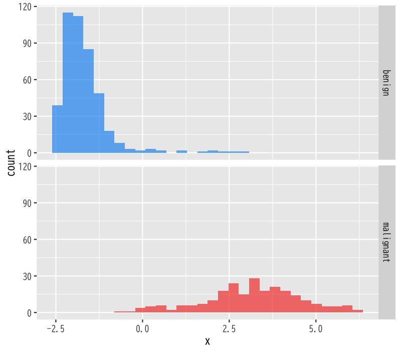
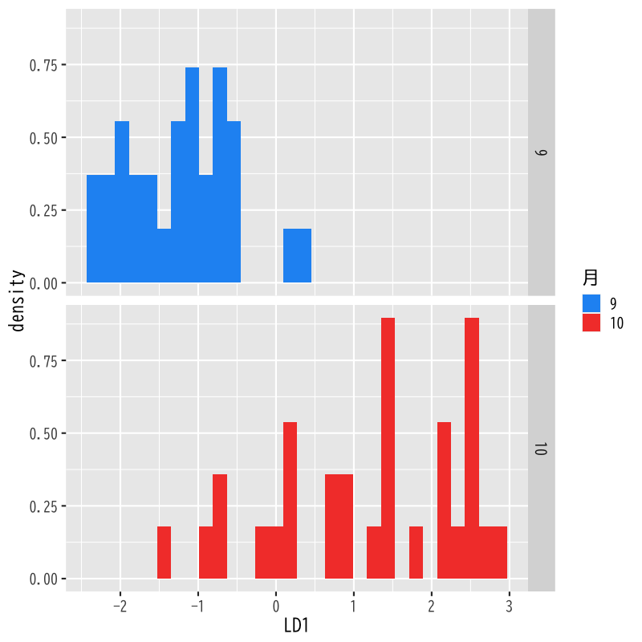

判別分析
基本的な考え方
(Press ? for help, n and p for next and previous slide)
講義の内容
- 第1回 : 判別分析の考え方
- 第2回 : 分析の評価
判別分析の考え方
判別分析
判別分析 (discriminant analysis) の目的
個体の特徴量からその個体の属する クラス を予測する関係式を構成する方法
- 関係式 : 判別関数 (discriminant function)
- 説明変数 : \(X=(X_{1},\dots,X_{q})\)
- 目的変数 : \(Y\) (\(K(\geq2)\) 個のクラスラベル)
- 判別関数による分類
- 1次式の場合 : 線形判別分析 (linear discriminant analysis)
- 2次式の場合 : 2次判別分析 (quadratic discriminant analysis)
判別分析の例
- データセット
Biopsy Data on Breast Cancer Patients
This breast cancer database was obtained from the University of Wisconsin Hospitals, Madison from Dr. William H. Wolberg. He assessed biopsies of breast tumours for 699 patients up to 15 July 1992; each of nine attributes has been scored on a scale of 1 to 10, and the outcome is also known. There are 699 rows and 11 columns.
判別分析の例
| ID | V1 | V2 | V3 | V4 | V5 | V6 | V7 | V8 | V9 | class |
|---|---|---|---|---|---|---|---|---|---|---|

Figure 1: 9種類の生検の散布図

Figure 2: 主成分分析を用いて2次元に縮約した生検と良性・悪性の関係

Figure 3: 線形判別関数による判別関数値の分布
その他の例
- 検査結果から患者が病気を罹患しているか判定する
- \(X=\) 検査結果
- \(Y=\) 病気・健康
- 今日の経済指標から明日株価を予測する
- \(X=\) 今日の経済指標
- \(Y=\) 明日株価の上昇・下降
- 今日の大気の状態から, 明日の天気を予測する
- \(X=\) 今日の大気の状態
- \(Y=\) 晴・くもり・雨・雪
判別分析の考え方
- 確率による定式化
\(X=\boldsymbol{x}\) の下で \(Y=k\) となる 条件付確率 を計算
\begin{equation} p_{k}(\boldsymbol{x})=P(Y=k|X=\boldsymbol{x}) \end{equation}- 所属する確率が最も高いクラスに個体を分類
観測データ : \(n\) 個の \((Y,X_{1},\dots,X_{q})\) の組
\begin{equation} \{(y_{i},x_{i1},\dots,x_{iq})\}_{i=1}^n \end{equation}- 観測データから\(Y\)の条件付確率 \(p_{k}(\boldsymbol{x})\) を構成
条件付確率
- 以下では \(X\) は離散型の \(q\) 次元確率変数として説明
事象 \(X=\boldsymbol{x}\) が起きたという条件の下で 事象 \(Y=k\) が起きる条件付確率
\begin{equation} p_{k}(\boldsymbol{x}) = P(Y=k|X=\boldsymbol{x}) = \frac{P(Y=k,X=\boldsymbol{x})}{P(X=\boldsymbol{x})} \end{equation}- 連続な確率変数の場合は確率密度関数を用いる
条件付確率の表現
- \(Y\)の条件付確率 \(p_{k}(\boldsymbol{x})\) のモデル化の方針
- \(p_{k}(\boldsymbol{x})\) を直接モデル化する (例 : ロジスティック回帰)
\(Y=k\) の下での \(X\) の条件付き確率質量関数
\begin{equation} f_{k}(\boldsymbol{x}) = P(X=\boldsymbol{x}|Y=k)=\frac{P(X=\boldsymbol{x},Y=k)}{P(Y=k)} \end{equation}のモデル化を通じて \(p_{k}(\boldsymbol{x})\) をモデル化する
- 本講義では 後者 について説明
演習
問題
- 以下の問に答えなさい
- \(X,Y\)を離散確率変数とするとき， \(P(X=x|Y=k)\)から \(P(Y=k|X=x)\)を計算する式を導け
解答例
Bayesの定理を用いればよい
事象で書くと以下のようになる
\begin{equation} P(A|B) =\frac{P(A)P(B|A)}{P(B)} \end{equation}離散変数の場合は
\begin{equation} P(Y=k|X=x) =\frac{P(Y=k)P(X=x|Y=k)}{P(X=x)} \end{equation}と書くことができる
事後確率による判別
Bayes の公式
\(f_{k}(\boldsymbol{x})\) から \(p_{k}(\boldsymbol{x})\) を得る数学的原理
原因 \(X=\boldsymbol{x}\) から結果 \(Y=k\) が生じる確率 を 結果 \(Y=k\) が生じる原因が \(X=\boldsymbol{x}\) である確率 から計算する方法
Bayes の公式 (Bayes’ formula)
\begin{equation} p_{k}(\boldsymbol{x}) = P(Y=k|X=\boldsymbol{x}) = \frac{f_{k}(\boldsymbol{x})P(Y=k)}{\sum_{l=1}^{K}f_l(\boldsymbol{x})P(Y=l)} \end{equation}- \(p_{k}(\boldsymbol{x})\): 原因 \(X=\boldsymbol{x}\) から結果 \(Y=k\) が生じる確率
- \(f_{k}(\boldsymbol{x})\): 結果 \(Y=k\) が生じる原因が \(X=\boldsymbol{x}\) である確率
Bayes の公式の略証
定義より
\begin{equation} f_{k}(\boldsymbol{x}) = P(X=\boldsymbol{x}|Y=k) = \frac{P(X=\boldsymbol{x},Y=k)}{P(Y=k)} \end{equation}求める条件付確率
\begin{equation} p_{k}(\boldsymbol{x}) = P(Y=k|X=\boldsymbol{x}) = \frac{f_{k}(\boldsymbol{x})P(Y=k)}{P(X=\boldsymbol{x})} \end{equation}
分母の展開
\begin{align} P(X=\boldsymbol{x}) &= \sum_{l=1}^{K}P(X=\boldsymbol{x},Y=l)\\ &= \sum_{l=1}^{K}f_l(\boldsymbol{x})P(Y=l) \end{align}
事前確率と事後確率
- 事前確率 : \(\pi_{k}=P(Y=k)\) (prior probability)
- \(X=\boldsymbol{x}\) が与えられる前に予測されるクラス確率
- 事後確率 : \(p_{k}(\boldsymbol{x})\) (posterior probability)
- \(X=\boldsymbol{x}\) が与えられた後に予測されるクラス確率
Bayes の公式による書き換え
\begin{equation} p_{k}(\boldsymbol{x}) = \frac{f_{k}(\boldsymbol{x})\pi_{k}}{\sum_{l=1}^{K}f_l(\boldsymbol{x})\pi_l} = \frac{f_{k}(\boldsymbol{x})}{\sum_{l=1}^{K}f_l(\boldsymbol{x})\pi_l} \cdot\pi_{k} \end{equation}- 事前確率が説明変数の条件付確率の重みで変更される
事前確率の決め方
事前に特別な情報がない場合
データから自然に決まる確率
\begin{equation} \pi_{k} = \frac{\text{\(Y=k\)のサンプル数}}{\text{全サンプル数}} \end{equation}事前に情報がある場合
食事・運動・飲酒・ストレスなどの生活の特徴から生活習慣病か否かを判別
- 健常者の食事・運動・飲酒・ストレスなどの特徴量を収集
- 罹患者の食事・運動・飲酒・ストレスなどの特徴量を収集
- 事前確率は 別の調査の日本人の罹患率 を利用
線形判別分析
判別関数
- 判別の手続き
- 説明変数 \(X=\boldsymbol{x}\) の取得
- 事後確率 \(p_{k}(\boldsymbol{x})\) の計算
- 事後確率最大のクラスにデータを分類
判別関数 : \(\delta_{k}(\boldsymbol{x})\) (\(k=1,\dots,K\))
\begin{equation} p_{k}(\boldsymbol{x}) < p_l(\boldsymbol{x}) \Leftrightarrow \delta_{k}(\boldsymbol{x}) < \delta_l(\boldsymbol{x}) \end{equation}- 事後確率の順序を保存する計算しやすい関数
- 判別関数 \(\delta_{k}(\boldsymbol{x})\) を最大化するクラス \(k\) に分類
線形判別
- \(f_{k}(\boldsymbol{x})\) の仮定
- \(q\) 変量正規分布の密度関数
- 平均ベクトル \(\boldsymbol{\mu}_{k}\) : クラスごとに異なる
共分散行列 \(\Sigma\) : すべてのクラスで共通
\begin{equation} f_{k}(\boldsymbol{x}) = \frac{1}{(2\pi)^{q/2}\sqrt{\det\Sigma}} \exp\left(-\frac{1}{2}(\boldsymbol{x}-\boldsymbol{\mu}_{k})^{\mathsf{T}} \Sigma^{-1}(\boldsymbol{x}-\boldsymbol{\mu}_{k})\right) \end{equation}
線形判別関数 : \(\boldsymbol{x}\) の1次式
\begin{equation} \delta_{k}(\boldsymbol{x}) = \boldsymbol{x}^{\mathsf{T}}\Sigma^{-1}\boldsymbol{\mu}_{k} -\frac{1}{2}\boldsymbol{\mu}_{k}^{\mathsf{T}}\Sigma^{-1}\boldsymbol{\mu}_{k} +\log\pi_{k} \end{equation}
平均・分散の推定
平均の推定 (クラスごとに行う)
\begin{equation} \hat{\boldsymbol{\mu}}_{k} = \frac{1}{n_{k}}\sum_{i:y_{i}=k}\boldsymbol{x}_{i} \end{equation}- ただし \(n_{k}\) は \(y_{i}=k\) であるようなデータの総数
分散の推定 (まとめて行う)
\begin{equation} \hat{\Sigma} = \frac{1}{n{-}K}\sum_{k=1}^{K}\sum_{i:y_{i}=k} (\boldsymbol{x}_{i}-\hat{\boldsymbol{\mu}}_{k}) (\boldsymbol{x}_{i}-\hat{\boldsymbol{\mu}}_{k})^{\mathsf{T}} \end{equation}
演習
問題
- 以下の問に答えなさい
\(X\)の条件付確率 \(f_{k}(\boldsymbol{x})\) に関する仮定
- \(q\) 変量正規分布の密度関数
- 平均ベクトル \(\boldsymbol{\mu}_{k}\) : クラスごとに異なる
- 共分散行列 \(\Sigma\) : すべてのクラスで共通
のもとで 事後確率と線形判別関数の同値性
\begin{equation} p_{k}(\boldsymbol{x}) < p_l(\boldsymbol{x}) \Leftrightarrow \delta_{k}(\boldsymbol{x}) < \delta_l(\boldsymbol{x}) \end{equation}を示しなさい
解答例
同値関係を順に確認すればよい
\begin{align} &p_{k}(\boldsymbol{x}) < p_l(\boldsymbol{x})\\ &\Leftrightarrow f_{k}(\boldsymbol{x})\pi_{k} < f_l(\boldsymbol{x})\pi_l\\ &\qquad\text{(分母は共通)}\\ &\Leftrightarrow \log f_{k}(\boldsymbol{x})+\log\pi_{k} < \log f_l(\boldsymbol{x})+\log\pi_l\\ &\Leftrightarrow -\frac{1}{2}(\boldsymbol{x}-\boldsymbol{\mu}_{k})^{\mathsf{T}} \Sigma^{-1}(\boldsymbol{x}-\boldsymbol{\mu}_{k})+\log\pi_{k}\\ &\phantom{\Leftrightarrow}\quad < -\frac{1}{2}(\boldsymbol{x}-\boldsymbol{\mu}_l)^{\mathsf{T}} \Sigma^{-1}(\boldsymbol{x}-\boldsymbol{\mu}_l)+\log\pi_l\\ &\qquad\text{(2次の項は右辺と左辺で共通)}\\ &\Leftrightarrow \delta_{k}(\boldsymbol{x}) < \delta_l(\boldsymbol{x}) \end{align}
2次判別分析
2次判別
- \(f_{k}(\boldsymbol{x})\) の仮定
- \(q\) 変量正規分布の密度関数
- 平均ベクトル \(\boldsymbol{\mu}_{k}\) : クラスごとに異なる
共分散行列 \(\Sigma_{k}\) : クラスごとに異なる
\begin{equation} f_{k}(\boldsymbol{x}) = \frac{1}{(2\pi)^{q/2}\sqrt{\det\Sigma_{k}}} \exp\left(-\frac{1}{2}(\boldsymbol{x}-\boldsymbol{\mu}_{k})^{\mathsf{T}} \Sigma_{k}^{-1}(\boldsymbol{x}-\boldsymbol{\mu}_{k})\right) \end{equation}
2次判別関数 : \(\boldsymbol{x}\) の2次式
\begin{equation} \delta_{k}(\boldsymbol{x}) = -\frac{1}{2}\log\det\Sigma_{k} -\frac{1}{2}(\boldsymbol{x}-\boldsymbol{\mu}_{k})^{\mathsf{T}} \Sigma_{k}^{-1}(\boldsymbol{x}-\boldsymbol{\mu}_{k}) +\log\pi_{k} \end{equation}
平均・分散の推定
平均の推定 (クラスごとに行う)
\begin{equation} \hat{\boldsymbol{\mu}}_{k} = \frac{1}{n_{k}}\sum_{i:y_{i}=k}\boldsymbol{x}_{i} \end{equation}- だたし \(n_{k}\) は \(y_{i}=k\) であるようなデータの総数
分散の推定 (クラスごとに行う)
\begin{equation} \hat{\Sigma}_{k} = \frac{1}{n_{k}-1}\sum_{i:y_{i}=k} (\boldsymbol{x}_{i}-\hat{\boldsymbol{\mu}}_{k}) (\boldsymbol{x}_{i}-\hat{\boldsymbol{\mu}}_{k})^{\mathsf{T}} \end{equation}
演習
問題
- 以下の問に答えなさい
\(X\)の条件付確率 \(f_{k}(\boldsymbol{x})\) に関する仮定
- \(q\) 変量正規分布の密度関数
- 平均ベクトル \(\boldsymbol{\mu}_{k}\) : クラスごとに異なる
- 共分散行列 \(\Sigma_{k}\) : クラスごとに異なる
のもとで 事後確率と2次判別関数の同値性
\begin{equation} p_{k}(\boldsymbol{x}) < p_l(\boldsymbol{x}) \Leftrightarrow \delta_{k}(\boldsymbol{x}) < \delta_l(\boldsymbol{x}) \end{equation}を示しなさい
解答例
同値関係を順に確認すればよい
\begin{align} &p_{k}(\boldsymbol{x}) < p_l(\boldsymbol{x})\\ &\Leftrightarrow f_{k}(\boldsymbol{x})\pi_{k} < f_l(\boldsymbol{x})\pi_l\\ &\Leftrightarrow \log f_{k}(\boldsymbol{x})+\log\pi_{k} < \log f_l(\boldsymbol{x})+\log\pi_l\\ &\Leftrightarrow -\frac{1}{2}\log\det\Sigma_{k} -\frac{1}{2}(\boldsymbol{x}-\boldsymbol{\mu}_{k})^{\mathsf{T}} \Sigma_{k}^{-1}(\boldsymbol{x}-\boldsymbol{\mu}_{k}) +\log\pi_{k}\\ &\phantom{\Leftrightarrow}\quad < -\frac{1}{2}\log\det\Sigma_l -\frac{1}{2}(\boldsymbol{x}-\boldsymbol{\mu}_l)^{\mathsf{T}} \Sigma_l^{-1}(\boldsymbol{x}-\boldsymbol{\mu}_l) +\log\pi_l\\ &\Leftrightarrow \delta_{k}(\boldsymbol{x}) < \delta_l(\boldsymbol{x}) \end{align}
さまざまな多値判別
多値判別の構成方法
- 判別関数の比較
- 判別関数 \(\delta_{k}\) を比較
- 正規分布を仮定する場合は一般には2次判別
- 2値判別の統合
- 2クラスでの比較 : 最大の組合せ数 \({}_{K}C_{2}\)
- グループでの比較 : 最大の組合せ数 \(2^{K-1}-1\)
- \(K{-}1\) 個の特徴量への変換
- 説明変数の線形結合による特徴量の構成
- 異なる\(K\)種の点の集合を\(K{-}1\)次元空間に配置
- Fisher の線形判別
変動の分解
- 3種類の変動
- \(A=\sum_{i=1}^{n}(\boldsymbol{x}_{i}-\boldsymbol{\mu})(\boldsymbol{x}_{i}-\boldsymbol{\mu})^{\mathsf{T}}\) : 全変動
- \(W=\sum_{i=1}^{n}(\boldsymbol{x}_{i}-\boldsymbol{\mu}_{y_{i}})(\boldsymbol{x}_{i}-\boldsymbol{\mu}_{y_{i}})^{\mathsf{T}}\) : 群内変動
- \(B=\sum_{k=1}^{K}n_{k}(\boldsymbol{\mu}_{k}-\boldsymbol{\mu})(\boldsymbol{\mu}_{k}-\boldsymbol{\mu})^{\mathsf{T}}\) :
群間変動
(\(n_{k}\) はクラス \(k\) のデータ数)
変動の関係
\begin{equation} \text{(全変動)} = \text{(群内変動)} + \text{(群間変動)} \end{equation}\begin{equation} A = W + B \end{equation}
演習
問題
- 以下の問に答えなさい
- 全変動が群内・群間変動に分解されることを示しなさい
説明変数の線形結合で新たな特徴量を構成する
\begin{equation} Z=\boldsymbol{\alpha}^{\mathsf{T}} X \end{equation}このとき\(Z\)の群内変動と群間変動を求めなさい
解答例
定義どおりに計算する
\begin{align} A &=\sum_{i=1}^{n}(\boldsymbol{x}_{i}-\boldsymbol{\mu}) (\boldsymbol{x}_{i}-\boldsymbol{\mu})^{\mathsf{T}}\\ &= \sum_{i=1}^{n}(\boldsymbol{x}_{i}-\boldsymbol{\mu}_{y_{i}}+\boldsymbol{\mu}_{y_{i}}-\boldsymbol{\mu}) (\boldsymbol{x}_{i}-\boldsymbol{\mu}_{y_{i}}+\boldsymbol{\mu}_{y_{i}}-\boldsymbol{\mu})^{\mathsf{T}}\\ &= \sum_{i=1}^{n}(\boldsymbol{x}_{i}-\boldsymbol{\mu}_{y_{i}}) (\boldsymbol{x}_{i}-\boldsymbol{\mu}_{y_{i}})^{\mathsf{T}} + \sum_{i=1}^{n}(\boldsymbol{\mu}_{y_{i}}-\boldsymbol{\mu}) (\boldsymbol{\mu}_{y_{i}}-\boldsymbol{\mu})^{\mathsf{T}}\\ &\quad +\sum_{i=1}^{n}(\boldsymbol{x}_{i}-\boldsymbol{\mu}_{y_{i}}) (\boldsymbol{\mu}_{y_{i}}-\boldsymbol{\mu})^{\mathsf{T}} +\sum_{i=1}^{n}(\boldsymbol{\mu}_{y_{i}}-\boldsymbol{\mu}) (\boldsymbol{x}_{i}-\boldsymbol{\mu}_{y_{i}})^{\mathsf{T}} \end{align}
添字の扱いに注意する
\begin{align} &= \sum_{i=1}^{n}(\boldsymbol{x}_{i}-\boldsymbol{\mu}_{y_{i}}) (\boldsymbol{x}_{i}-\boldsymbol{\mu}_{y_{i}})^{\mathsf{T}} + \sum_{k=1}^{K}\sum_{i:y_{i}=k} (\boldsymbol{\mu}_{k}-\boldsymbol{\mu}) (\boldsymbol{\mu}_{k}-\boldsymbol{\mu})^{\mathsf{T}}\\ &\quad +\sum_{k=1}^{K}\sum_{i:y_{i}=k} (\boldsymbol{x}_{i}-\boldsymbol{\mu}_{k}) (\boldsymbol{\mu}_{k}-\boldsymbol{\mu})^{\mathsf{T}} +\sum_{k=1}^{K}\sum_{i:y_{i}=k} (\boldsymbol{\mu}_{k}-\boldsymbol{\mu}) (\boldsymbol{x}_{i}-\boldsymbol{\mu}_{k})^{\mathsf{T}}\\ &= \sum_{i=1}^{n}(\boldsymbol{x}_{i}-\boldsymbol{\mu}_{y_{i}}) (\boldsymbol{x}_{i}-\boldsymbol{\mu}_{y_{i}})^{\mathsf{T}} + \sum_{k=1}^{K}n_{k}(\boldsymbol{\mu}_{k}-\boldsymbol{\mu}) (\boldsymbol{\mu}_{k}-\boldsymbol{\mu})^{\mathsf{T}}\\ &= W+B \end{align}
定義どおりに計算する
\begin{align} \sum_{i=1}^{n} (z_{i}-\mu_{y_{i}})^{2} &= \sum_{i=1}^{n} (z_{i}-\mu_{y_{i}})(z_{i}-\mu_{y_{i}})\\ &= \sum_{i=1}^{n}(\boldsymbol{\alpha}^{\mathsf{T}}\boldsymbol{x}_{i} -\boldsymbol{\alpha}^{\mathsf{T}}\boldsymbol{\mu}_{y_{i}}) (\boldsymbol{\alpha}^{\mathsf{T}}\boldsymbol{x}_{i} -\boldsymbol{\alpha}^{\mathsf{T}}\boldsymbol{\mu}_{y_{i}})^{\mathsf{T}}\\ &= \boldsymbol{\alpha}^{\mathsf{T}} \sum_{i=1}^{n}(\boldsymbol{x}_{i}-\boldsymbol{\mu}_{y_{i}}) (\boldsymbol{x}_{i}-\boldsymbol{\mu}_{y_{i}})^{\mathsf{T}} \boldsymbol{\alpha} = \boldsymbol{\alpha}^{\mathsf{T}} W\boldsymbol{\alpha}\\ \sum_{k=1}^{K}n_{k}(\mu_{k}-\mu)^{2} &= \boldsymbol{\alpha}^{\mathsf{T}} B\boldsymbol{\alpha} \end{align}
Fisher の判別分析
Fisherの線形判別
- 判別のための特徴量 \(Z=\boldsymbol{\alpha}^{\mathsf{T}} X\)
- 特徴量\(Z\)のばらつきの計算は主成分分析と同様
- 変動 \(A,W,B\) を Gram 行列とみなせばよい
- 良い \(Z\) の基準
- クラス内では集まっているほど良い (\(\boldsymbol{\alpha}^{\mathsf{T}} W\boldsymbol{\alpha}\)は小)
- クラス間では離れているほど良い (\(\boldsymbol{\alpha}^{\mathsf{T}} B\boldsymbol{\alpha}\)は大)
Fisherの基準
\begin{equation} \text{maximize}\quad \boldsymbol{\alpha}^{\mathsf{T}} B\boldsymbol{\alpha} \quad\text{s.t.}\quad \boldsymbol{\alpha}^{\mathsf{T}} W\boldsymbol{\alpha}=\text{const.} \end{equation}- クラス内変動を一定にしてクラス間変動を最大化する
Fisherの線形判別の解
- \(\boldsymbol{\alpha}\) は \(W^{-1}B\) の固有ベクトル (主成分分析と同様)
\(K=2\) の場合 : 最大固有値を用いる (線形判別と一致)
\begin{equation} \boldsymbol{\alpha}\propto W^{-1}(\boldsymbol{\mu}_{1}-\boldsymbol{\mu}_2) =\Sigma^{-1}(\boldsymbol{\mu}_{1}-\boldsymbol{\mu}_2) \end{equation}- 一般の \(K\) の場合 : 第1から第 \(K{-}1\) 固有値を用いる
- 判別の手続き
- 特徴量とクラスの中心までの距離を用いる
- \(d_{k}=\sum_{l=1}^{K{-}1}(\boldsymbol{\alpha}_l^{\mathsf{T}}\boldsymbol{x}-\boldsymbol{\alpha}_l^{\mathsf{T}}\boldsymbol{\mu}_{k})^2\) を計算
- 最小の \(d_{k}\) となるクラス \(k\) に判別
- 特徴量 \(Z\) の空間をクラスごとの平均を用いて Voronoi 分割している
- 特徴量とクラスの中心までの距離を用いる
解析の事例
データについて
気温と湿度による月の判別
9,10月のデータの散布図

Figure 4: 散布図
線形判別 (2値)

Figure 5: 線形判別 (判別関数の値)
線形判別 (2値)

Figure 6: 線形判別 (判別境界)
2次判別 (2値)

Figure 7: 2次判別
Fisherの線形判別 (多値)

Figure 8: 多値判別
次回の予定
- 第1回 : 判別分析の考え方
- 第2回 : 分析の評価